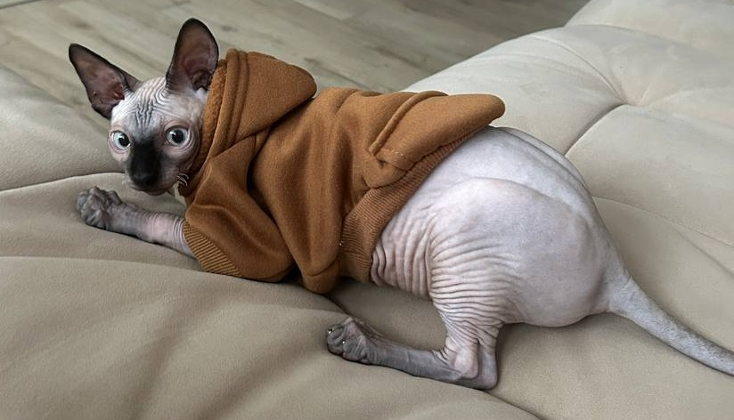
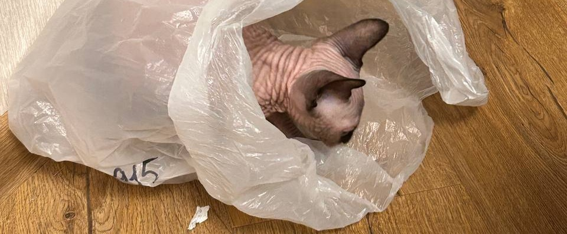
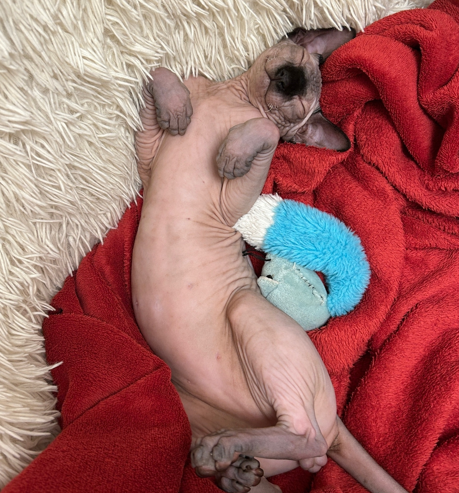
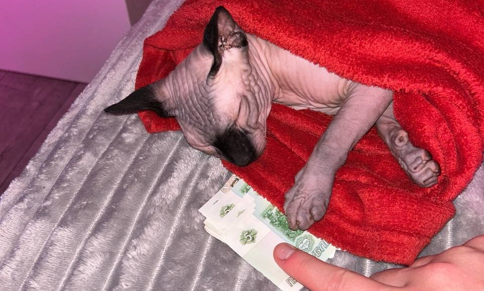
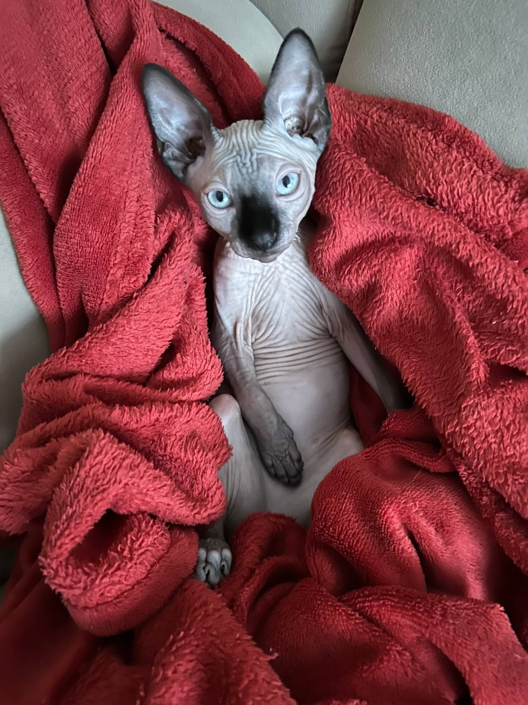
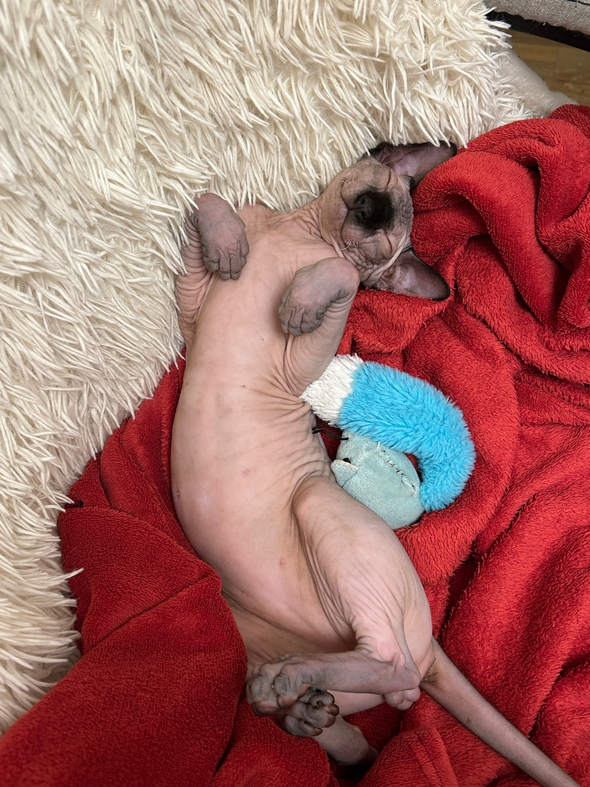
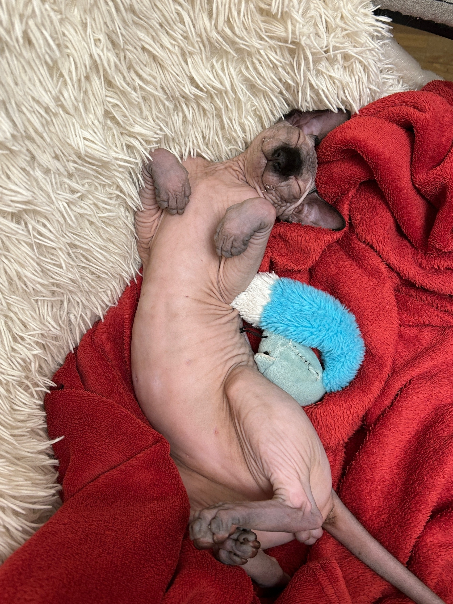

Наш герой в моменте полного расслабления. Да, он действительно спит в такой позе!

Тут он занимает свое любимое место — на тумбочке. Потому что высокие места — это его территория.

Они лысые, они странные, они невероятно милые. И они станут вашими лучшими друзьями.
Добро пожаловать в мир сфинксов — самых необычных, самых обаятельных и самых... лысых кошек на планете! Если вы думаете, что завести сфинкса — это как завести кота, то вы глубоко заблуждаетесь. Это как завести маленького инопланетянина, который прилетел на Землю, чтобы учить вас любить без условий и терпеть его странности.

Наш герой в моменте полного расслабления. Да, он действительно спит в такой позе!

Тут он занимает свое любимое место — на тумбочке. Потому что высокие места — это его территория.
Сфинкс — это не просто кот без шерсти, это настоящий ходячий музей генетики. Его кожа — это как холст для искусства, где каждая складка и пятнышко имеет свою историю. Он не лысый по выбору — он лысый по природе, и это делает его уникальным. Некоторые говорят, что он похож на старика-философа, другие — на маленького дракона. Но все согласны: он невероятно милый.

Он любит тепло, поэтому часто укрывается в одеялах. И да, он выглядит как маленький фараон, который только что проснулся.
Уход за сфинксом — это целое искусство. Ему нужна регулярная ванна, потому что его кожа выделяет больше масла, чем ваша кожа после жирной пиццы. Он любит теплые места, так что будьте готовы делиться с ним одеялами, подушками и даже вашим местом на диване. И да, он будет спать в самых неожиданных местах — на тумбочке, в коробке, на вашем ноутбуке. Потому что он — сфинкс, и ему все равно, где спать, главное — быть рядом с вами.
Да, он действительно любит воду! В отличие от других котов, сфинкс не боится ванны. Наоборот — он считает их спа-процедурами.
Сфинкс — это не просто кот, это маленький гурман. Он может есть почти все, что вы ему предложите, но предпочитает качественную еду. Не удивляйтесь, если он начнет просить у вас кусочек мяса или рыбы — он знает, что это вкусно. И да, он будет смотреть на вас так, будто вы его личный повар, и ожидать, что вы накормите его именно так, как он хочет.

Его любимая игрушка — это не просто игрушка, это его друг. Он может играть с ней часами.

На кухне он чувствует себя как дома. Особенно когда там есть еда. Он будет смотреть на вас так, будто вы должны накормить его прямо сейчас.
Игры с сфинксом — это отдельное приключение. Он может играть с любым предметом — от игрушки до вашего носка. Он любит прыгать, бегать и ловить пылинки в воздухе. Иногда он будет смотреть на вас так, будто вы его личный тренер, и ожидать, что вы будете играть с ним каждый день. Потому что он — сфинкс, и ему нужно двигаться!

Игры с сфинксом — это настоящее приключение. Он может играть с любым предметом — от игрушки до вашего носка.
Жизнь со сфинксом — это постоянное приключение. Он будет удивлять вас, смешить вас и иногда раздражать вас. Но вы будете любить его за это. Потому что он — ваш лысый чудик, ваш маленький инопланетянин, ваш лучший друг. И помните: если вы завели сфинкса, вы уже не просто человек — вы герой, который выбрал необычную, но невероятно прекрасную жизнь.

Жизнь со сфинксом — это постоянное приключение. Он будет удивлять вас, смешить вас и иногда раздражать вас. Но вы будете любить его за это.
Это не просто кот — это маленький инопланетянин, который прилетел на Землю, чтобы учить вас любить без условий.